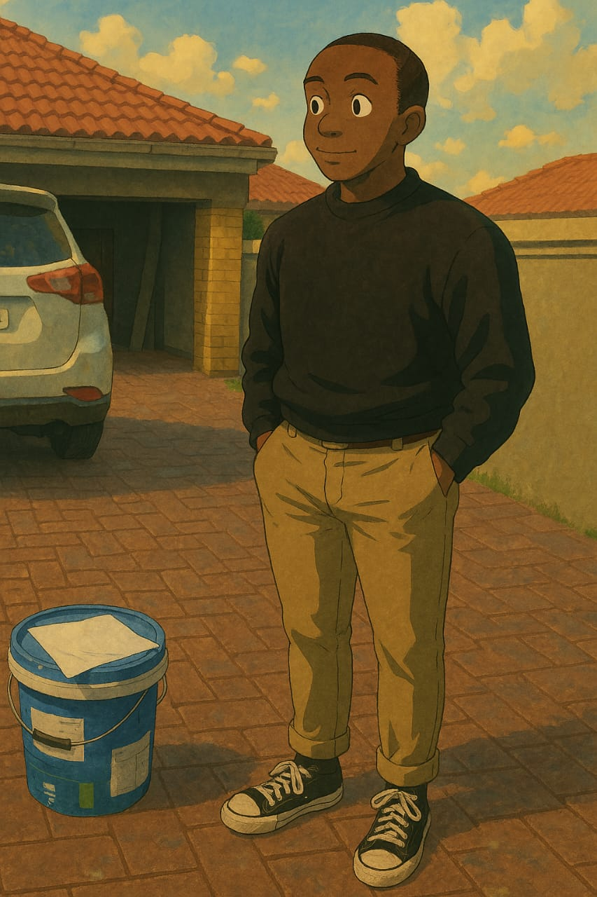

Adolph Pfariso Netokolola

Brief Summary
I am an adaptale individial who have earned everything that I know on this sector through Udemy, SoloLearn, YouTube, and some other plartforms on the internet.
I am creative writer, currently pouring the gas on this little copywriting spark that I have. Alongside it is developing and designing websites.
I hold a Bachelor's Degree in Supply Chain and Operations Managament, and I am currently working towards obtaing my Honours in Supply Chain Management. With these qualifications I am going to at a warehouse or a logistics company, for my love of movement.
At the end of the day, I have to merge my love for writing both code and creative stuffs with my profession to be in the space of warehousing and logistics.
Education
BsC Supply Chain and Operations Management, The University of South Africa (UNISA), 2024.
Hons Supply Chain Management, Management College of South Africa (MANCOSA), 2026.
Work Experience
Harvesthouse Consulting and Training South Africa, 2024 - Current
Training Consultant
- Designed and facilitated training programs tailored to clients' needs
- Assisted in assessing employee development needs and delivering learning solutions.
- Coordinated training logistics and ensured smooth program execution.
- Built strong relationships with clients through effective communication and follow-up.
NedMedia Group, June 2022 - January 2023
Graphic and Web Designer
- Developed creative website layouts and digital marketing materials.
- Collaborated with clients to understand branding needs and deliver quality results.
- Managed multiple design projects while meeting deadlines.
- Improved site usability and user experience through design enhancements.
Contact Me
My Hobbies